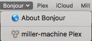

How to use Avahi to advertise an HTTP service
This is a simple guide to how to set up avahi to advertise an HTTP service that a web browser (in this case, Safari’s Bonjour) can detect and hook into.
Background: This is running on a server running FreeBSD 10.3.0. Avahi was installed using pkg and set up with the default configuration. It is used largely as a sandbox for experimenting, as well as being a media/file server and a light webserver.I want to advertise the existence of the Plex server for easy use.
First, install avahi with the package manager of your choice. In the case of FreeBSD and pkg,
pkg install avahi -y. If using FreeBSD, you’ll need to enable the service by adding
avahi_daemon_enable="YES" to /etc/rc.conf. In GNU/Linux distros, this is typically not required.
The avahi service can now be manipulated with sudo service avahi-daemon <start/stop/restart>.
Next, find the avahi services directory. With my installation, it is located in
/usr/local/etc/avahi/services. On other GNU/Linux distros, it may be found in
/etc/avahi/services. In the services directory, you will likely see some default services aleady
set up. For example, I already had sftp-ssh.service amd ssh.service in mine.
Create a new file called <your-service>.service. In my case, this is plex.service.
Within that file, add the following (which I shamelessly stole most of from
here):
<?xml version="1.0" standalone='no'?><!--*-nxml-*-->
<!DOCTYPE service-group SYSTEM "avahi-service.dtd">
<service-group>
<name replace-wildcards="yes">%h <YOUR_HTTP_SERVICE></name>
<service>
<type>_http._tcp</type>
<port><YOUR_PORT></port>
</service>
</service-group>
Now, restart avahi with the command sudo service avahi-daemon restart. The new service will now be
viewable via bonjour clients, such as Safari and dns-sd (see below).


Update #
So, after turning on SEO and forgetting about it for a few weeks, this page has gotten pretty
popular. Looking back, it’s a bit lackluster in terms of information, so I’ll put in a bit more
information here. To be honest, I mostly made this so I could personally reference it later when I
forgot how to use avahi, so it’s a bit barebones. That said, the XML .service file above is a
pretty good example, but I’ll elaborate on a
bit of the information here to hopefully make zeroconf networking a bit easier to understand.
Important Caveat #
On the client side, identifying a domain and resolving a domain are two different things. You first
need to browse for a domain, and then using the name, service, and domain information, issue a
resolve command against it to resolve an address you can reach it at. dns-sd examples of how to
do this can be found at the bottom of the page.
Linux Guide #
Because I understand Linux a bit better now, I’ll include some details for it.
On Debian-based distros, you can install avahi with apt-get install avahi-daemon
On RHEL/CentOS-based distros, use yum install avahi.
On Alpine Linux, use apk add -U avahi.
Enabling of the service will vary by what service manager you use, but using the general service
syntax, it should be something like service -e avahi-daemon to enable it and
service avahi-daemon start to start it.
Your services directory will most likely be located in /usr/etc/avahi/services.
Line-by-Line Breakdown #
<service-group></service-group> – This is the outermost tag required in your service definition.
<service></service> – This defined an individual service offered. For HTTP, for example, you may
offer both HTTP and HTTPS, and want to advertize two services, one for each port.
<name replace-wildcards="yes">%h <YOUR_HTTP_SERVICE></name> – this is the name your service will
broadcast itself as. replace-wildcards="yes" enables the %h wildcard, which replaces instances
of %h with your system hostname. When you detect the service with dns-sd or a similar bonjour
discovery tool, that’s what it will show up as.
<type>_http._tcp</type> – This defines the protocol/type of the service offered. If you’re
running ad-hoc servers, this can be very useful, because you can use it to key on your custom
service type. The second part, _tcp in this case, tells it whether you’re using TCP or UDP, and
is usually dependent on the higher-level service offered. Most services only support TCP (with the
exception of some things, like DNS resolution). If you’re using a custom app, something like
_mycustomapp._tcp would be good. Of course, you still need to validate that the service is
legitimate if you do that, as anyone could be claiming to be your app.
<port><YOUR_PORT></port> – For http, YOUR_PORT is probably 80 or 443 if you’re serving it
publicly, or maybe something like 8080 if you’re running a basic web-app behind a LAN.
<subtype></subtype> – This isn’t used in my example, but it is supported by avahi. You don’t need
it for something like an HTTP server, but for sophisticated protocols it might be useful.
<txt-record></txt-record> – Not in my example.
This allows for custom text-based records to your avahi broadcast.
This could be useful if you’re running some sort of custom app where other servers on the network
would need to know its characteristics. It’s pretty much free-form, so you can put whatever useful
information you need in these records.
Developing an App #
In general, if you’re developing some sort of app (web, integrated, or otherwise), I’d recommend looking for libraries for your specific language. The swift/iOS bonjour client is clunky, but if you’re doing macOS/iOS development it’s ultimately simpler to just use it. The one for python, aptly named zeroconf works well, is easy to use, and is great for prototyping.
Handy dns-sd Commands #
dns-sd -B _http – search the LAN for any HTTP services and update when any new ones are found.
dns-sd -R myservice _http._tcp local 8080 – Advertise a local HTTP service on port 8080 to your
local network (whether there actually is one or not).
dns-sd -L dns-sd -L myservername _http._tcp local – resolve the IP/domain and port of an
advertized service.